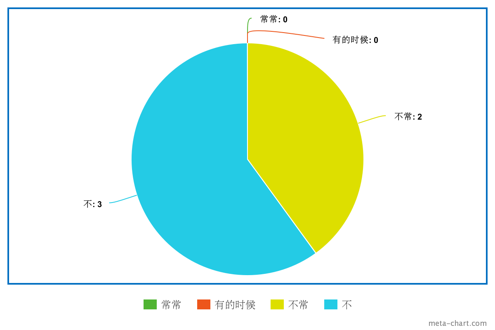
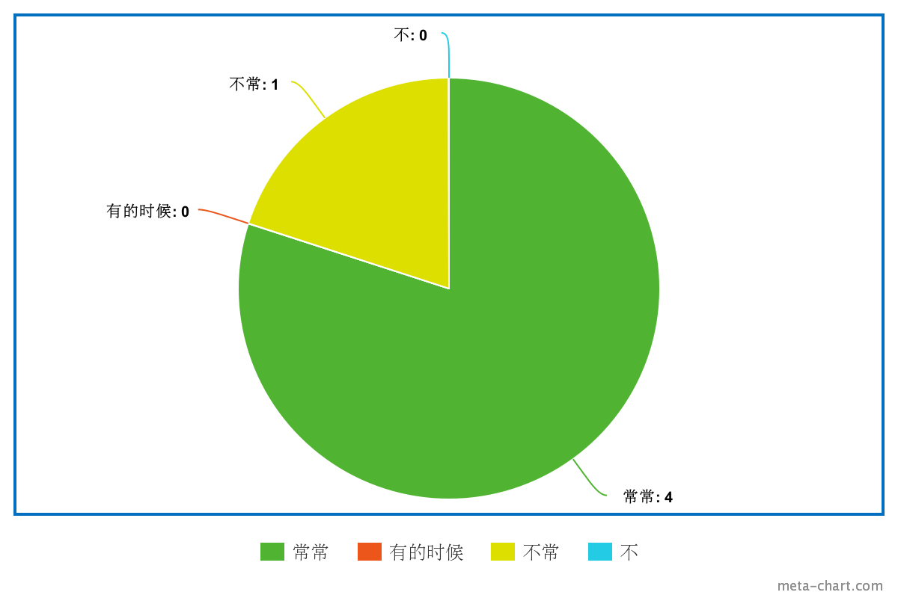
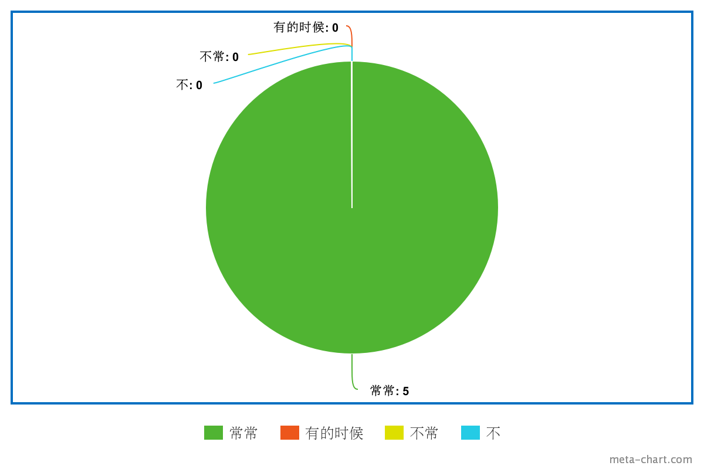
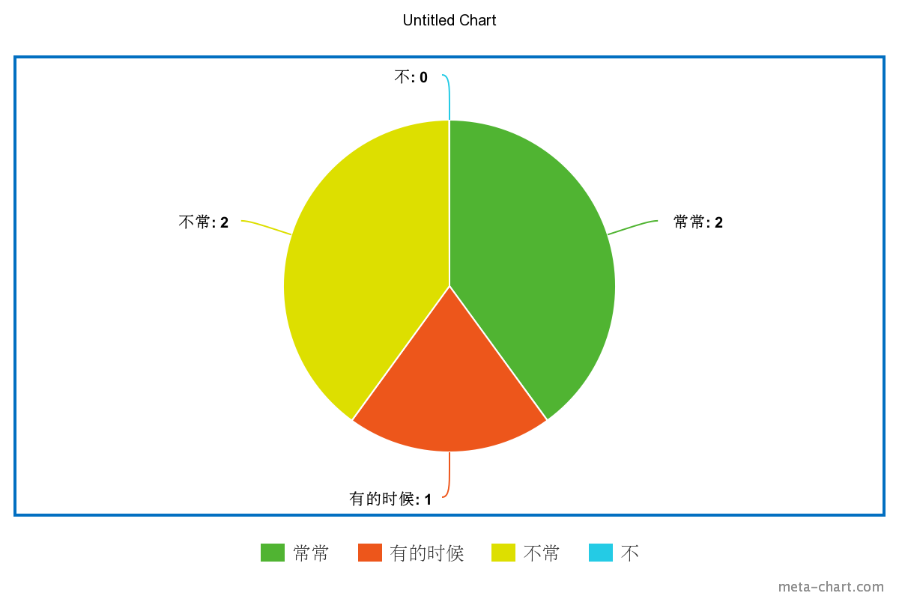
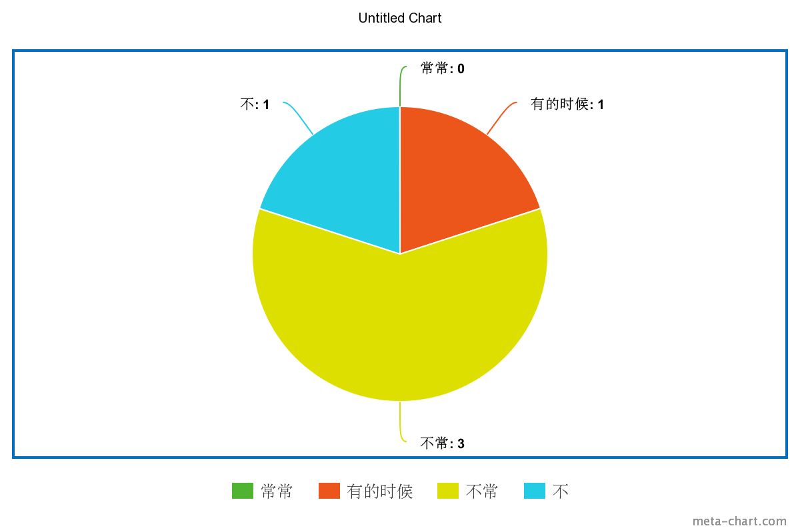

Tong2xue2 de ai4hao4
In this assignment, I made a survey in Chinese asking how often people walk, read, dance, listen to music, and play on their phones.
Thanks to everyone who filled it out! You make this possible!
| Results |
|---|
| 你常常跳舞吗？Do you dance often?  |
| 你常常看书吗？Do you read books often?  |
| 你常常听音乐吗？Do you listen to music often?  |
| 你常常玩手机吗？Do you play mobile games often?  |
| 你常常逛街吗？Do you go on walks often?  |
Just a quick aside real quick:
there's this really neat browser extension that I recommend to my classmates who are learning Chinese.
On Firefox and Google Chrome, it's called Zhongwen.
It's a really neat popup dictionary.
You just hover your mouse over a character you don't recognize and it'll display all of its pronunciations and definitions!
I think it's very, very nice.